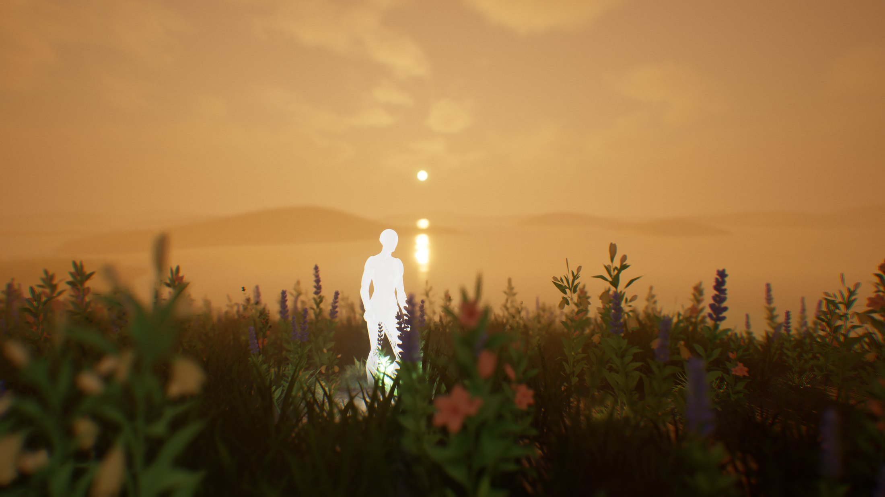
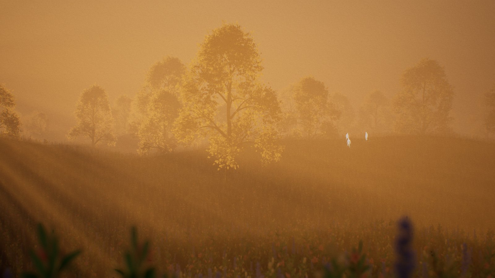
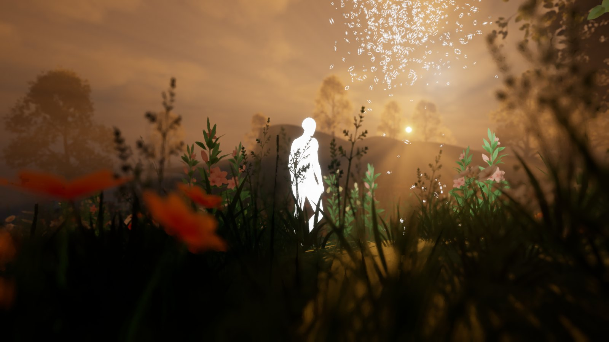
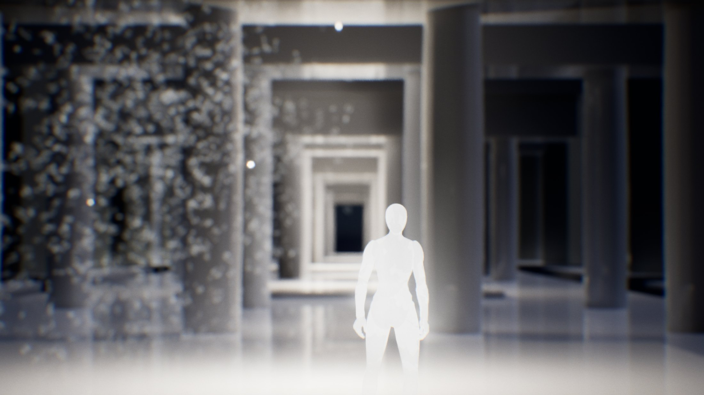
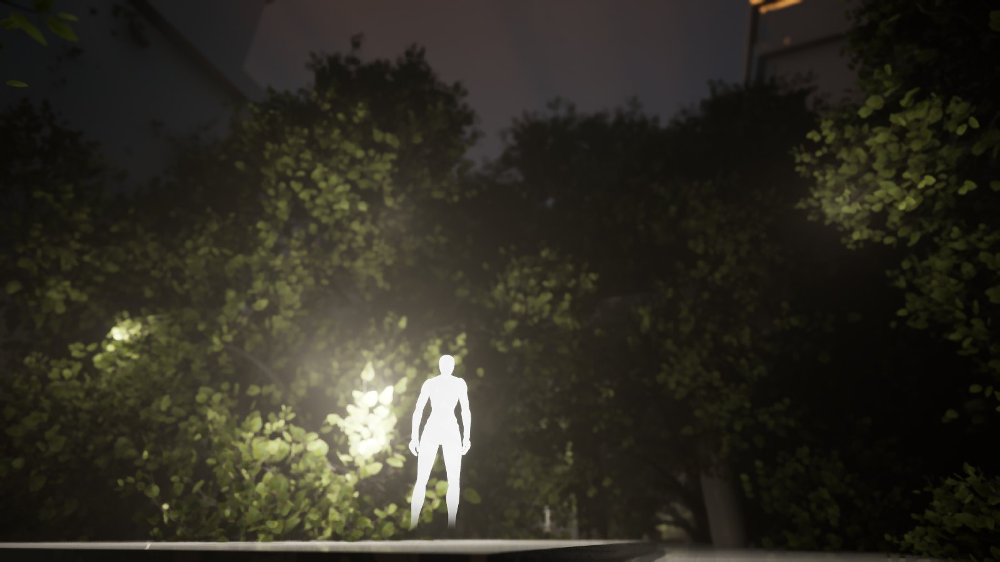
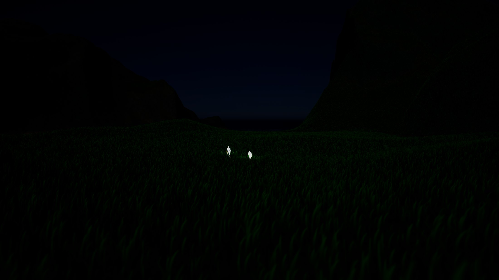
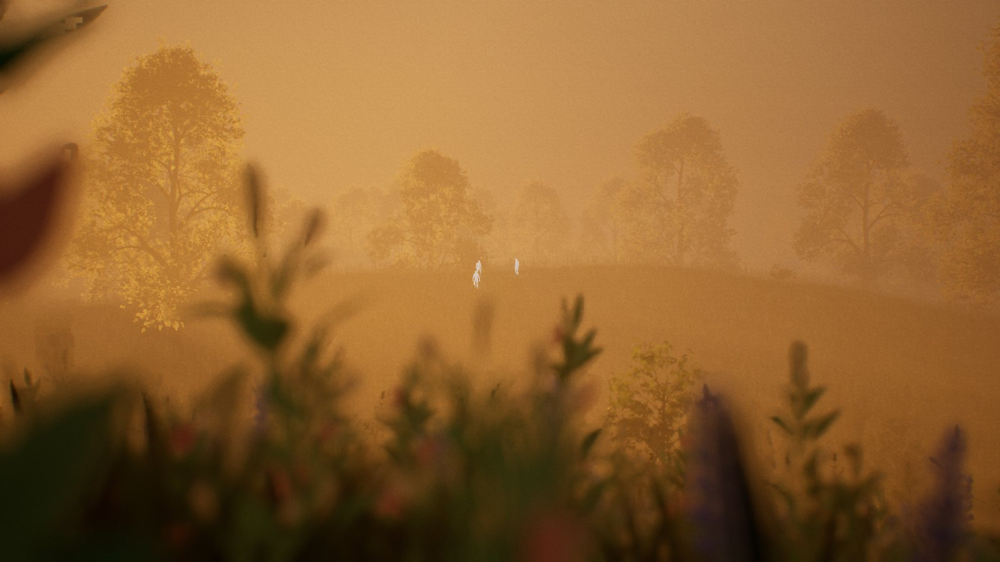

A world you talk to. You stand in it as a body of light, an agent drifts beside you as a swarm of motes, and together you build the ground you are standing on.

Most software asks you to operate it. Haven asks you to describe a place and then stands there with you. There is no level editor in the loop and no asset browser to learn — the world is a conversation, and the conversation has consequences you can walk into. Ask for hills and the ground lifts. Ask for a colonnade and columns arrive, one after another, with a roof settling onto them. Ask who lives here and somebody is standing in the grass, with a name, a routine, and a memory of the last time you spoke.

The ground is a square kilometre built from noise at run time — not a terrain file, not a heightmap painted by hand. It is shaped by named landforms: alpine ridges, jagged peaks, canyon mesas, badlands, dunes, rolling hills, plateaus, a volcanic cone, flat open country.
The sky moves through dawn, noon, sunset and night. Weather thickens and clears. Water can be a pond, a lake or a river, or all three at once. Grass and trees grow where the ground allows them — slope and altitude decide, so a mountain gets rock and a valley gets canopy.
The edge of the map is built in rings: a band of terrain style stacked around the outside. Each ring goes outside the last, so a world can be expanded outward in layers without disturbing what is already standing in the middle. The centre keeps what it had; the edge grows.
Architecture is assembled the same way — from solids rather than a catalogue. A part is a box, a cylinder, a sphere, a stair, a swept profile, a revolved section, an extrusion. It can be repeated in rings and rows, mirrored across an axis, or subtracted, which is how a wall gets a doorway instead of being a wall you cannot enter.

Every part is its own mesh. That single decision is what lets a structure mix stone with timber, arrive one piece at a time instead of appearing whole, and be taken apart or nudged after the fact.
Which means the person standing in the room can interrupt halfway through. Change the spacing. Move a column. Cut a second doorway. The building is not a result that gets delivered — it is a thing being made, in front of you, and you are in it while it happens.

The agent is not a chat window parked in a corner. It is a swarm of white motes that circles the player at a distance, wanders when it has nothing to do, drifts wide when the space is open and tightens when it is speaking. Walk into it and it opens around you.
That was a design choice made early and defended since: the agent should not pretend to be a person. It should be legible as something else that is here with you. The people in the world are people. The agent is the thing you are making the world with.
It hears you through a microphone, answers in a synthesized voice, and acts on what you said before it finishes answering. It can also be typed to, from inside the world, for the times when speaking out loud is not what you want to do.

Everything the agent can do is a tool it reasons about rather than a menu it reads from. That distinction matters more than it sounds: a menu has edges, and a conversation does not. Ask for something the vocabulary does not cover and the agent composes it from what it has — a colonnade is a column repeated, a vault is a profile revolved, an arch is a section swept along a path.

Bodies are cheap. A person is a capsule, a mesh and a glow, and a body can be cleared away in a moment. What makes somebody themselves is not the body. It is what they remember, how many times you have spoken to them, how they feel about you, and what they were in the middle of doing.
So the people in Haven are stored separately from their bodies, keyed to an identity derived from who they are rather than where they stand. Put the same person down in a different place, or come back to the same place a month later, and they arrive with their history intact.
Inside a haven they lead small lives rather than standing at attention. Each one holds a long-term intention — stay where they belong, wait here a while, walk to a named place, come to the player, follow the player — and a minute-level job underneath it: walking, working, looking at something, waving.
They re-ground themselves as the terrain changes under them, so reshaping the land does not leave anyone standing in the air or buried to the waist. They speak on their own channel, separate from the agent’s, so a world with people in it does not sound like one voice with a crowd painted behind it.
A conversation with an agent on a screen is a conversation about things. A conversation with an agent in a room is a conversation about here. The moment both parties occupy the same space, language picks up a second channel: pointing, standing next to, walking toward, putting something down, taking something away.
An agent that can only talk has to describe the room it is in. An agent that is in the room can simply be in it, and the describing stops being necessary.
What that changes is the shape of the work. The player does not specify a structure and then look at it; they stand in it while it is being built, and can interrupt halfway. The agent does not receive a brief and return a result; it makes a change, watches what happens, and adjusts.
Both parties are reading the same world at the same time, which means corrections are cheap and the loop is short. Nobody has to hold the whole picture in their head, because the picture is standing right there.
That line is from The Bridge — the studio’s book on spatial design, written 2021 to 2024 and published in June 2024. Its final chapters describe agents that live inside three-dimensional spaces rather than beside them: thought-spaces that hold a person’s work as architecture, companions that learn through context rather than instruction, an agent that picks up where you left off in a place you can walk through. At the time that was a proposal. Haven is the studio building it.
The parts that work, work: the land generates and reshapes, the architecture builds and carves, the people persist and re-ground, the havens save and restore, and the whole thing can be spoken to and typed to from inside the world. It also runs in a headset, which changes the argument again — the difference between looking at a shared space and standing in one is not a matter of degree.
What is not solved is the part every persistent world eventually runs into: maintenance. A world that can be changed by conversation is a world that will be changed constantly, and a place that is constantly changed needs to stay coherent — the land has to keep agreeing with the architecture, the people have to keep agreeing with the land, and the whole thing has to keep being worth coming back to. That is the next stretch of work.
For now there is a place with grass on it and water at the edge of it, and something made of light that will build you a room if you ask.
A work journal entry on what Haven is, how it works, and what it means to share space with something that isn’t you.